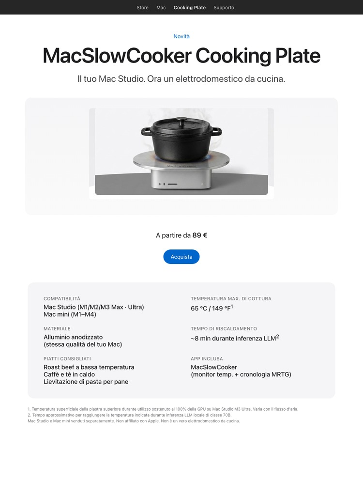

← hakaru Apps
CONCEPT / PARODIA
MacSlowCooker Cooking Plate
Il tuo Mac Studio. Ora un elettrodomestico da cucina.

Questa è una battuta. MacSlowCooker Cooking Plate non è un prodotto reale, un accessorio o un marchio registrato. La pagina sopra è una parodia di un lancio prodotto in stile Apple. Apple non è affiliata né a conoscenza di questo concept.
Da dove viene la battuta
Durante lo sviluppo di MacSlowCooker — un'app macOS reale che visualizza l'uso della GPU sul Dock come una pentola — eseguire inferenza LLM locale su un Mac Studio M3 Ultra scaldava il telaio abbastanza da far emergere ripetutamente la battuta "potresti davvero cucinarci sopra?".
Quindi esiste questa pagina concept. Inquadra il calore di un Mac che lavora intensamente come se fosse una funzione da cucina. I numeri sono reali, il prodotto no.
I numeri reali
- Il Mac Studio M3 Ultra raggiunge circa 65 °C / 149 °F sulla piastra superiore durante uso sostenuto al 100% della GPU.
- Tempo per raggiungere quella temperatura durante inferenza LLM locale di classe 70B: ~8 min.
- Il design termico di Apple mantiene la piastra superiore ben al di sotto delle normali temperature di cottura. Range sous-vide, non saltato in padella.
- Puoi monitorare tutto questo dal vivo con la vera app MacSlowCooker (icona del Dock, popup, visualizzatore cronologia a 4 pannelli stile MRTG).
Non farlo davvero
Appoggiare pentole calde, liquidi o qualsiasi cosa sensibile al calore su un computer attivo è una pessima idea. La piastra superiore del Mac Studio è in alluminio ma il flusso d'aria è critico per mantenere il SoC sotto i limiti termici. Bloccarlo accorcia la vita della macchina e può invalidare la garanzia.
Per approfondire